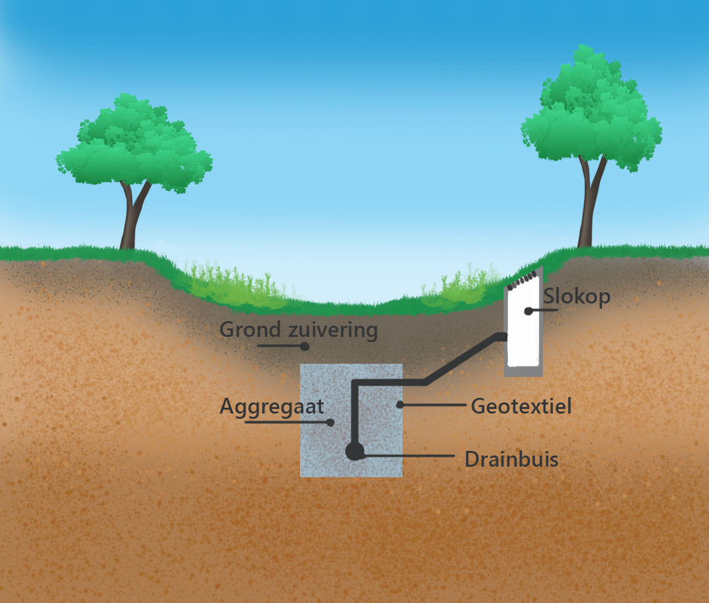
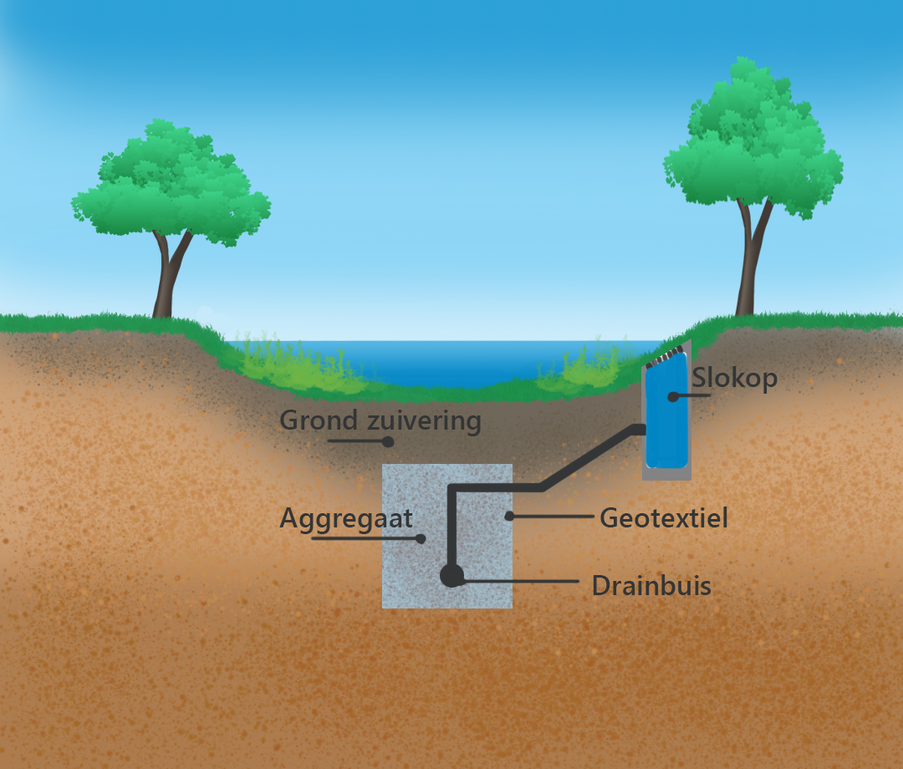

Water veiligheid & zekerheid
Nederland is een land van veel water, dit ook doordat Nederland onder zeespiegel ligt. Naast de dijken die we aanleggen zijn we continu bezig met water. De laatste jaren neemt de regenval alsmaar toe en dus zal er in tijden wanneer er neerslag valt meer water moet worden afgevoerd. Echter neemt de verstening ook toe, wat betekent dat er minder groene tuinen zijn. De hoge mate van verstening zorgt er voor dat de afwatering wordt belemmerd, terwijl er dus juist meer regenval is en er vraag is naar afwatering.
Wadi's?
Door te weinig afvoercapaciteit is bij de riolering, kunnen straten onder water komen te staan bij hevige regenval. Echter zijn er ook vele manieren dit tegen te gaan en om de waterafvoer te bevorderen. Zoals, wadi's, dit draagt bij aan de afvoer van water. Een wadi is eigenlijk een groene greppel in het stedelijk gebied. Het betekend 'Water Afvoer Drainage en Infiltratie' en zorgt eigenlijk ervoor dat regenwater wordt opgeborgen. Een wadi ligt vaak op plekken waar het water niet goed in de grond kan zakken en dus de hulp hiervan nodig heeft. Om zo het water te kunnen opslaan en wateroverlast voorkomen. Zo helpt een wadi tegen wateroverlast en droogte. Maar hoe werkt een wadi nou eigenlijk?
Hoe werkt een wadi?
Het werkt eigenlijk heel simpel, bij flinke regenbuien loopt de wadi vol. Om te beginnen bij de toplaagIn de toplaag van de wadi is grondverbetering toegepast zodat het regenwater beter kan infiltreren. Onder de toplaag kan een aanvullende berging worden aangebracht waar het water gebufferd wordt en van waaruit het water naar de omringende grond kan infiltreren. De berging kan bestaan uit kunststof kratten of buizen, uit grind of uit kleikorrels. De berging is omringd door waterdoorlatend geotextiel. Dit voorkomt dat gronddeeltjes in de berging stromen. De slokop, die bestaat uit een kolk, dient als overstort voor het teveel aan water. Hij staat in verbinding met de drainbuis die zich in de berging bevindt. Het water dat in de slokop komt, wordt daardoor direct via de drainbuis uit het gebied afgevoerd. Zo zorg je ervoor dat het water niet terecht komt op de straten maar in het grond water en kan het zijn natuurlijke proces alsnog doen.
Hoe werkt een wadi?
 Hoe werkt een wadi?
Het belangrijkste aan een wadi is dat het water binnen een paar dagen infiltreert in de grond, zodat het de volgende bui ook weer kan brengen. Wadi's zorgen er dus voor dat de verschillende problemen, bij het afvoeren van water kan oplossen. Het is een makkelijke oplossing.